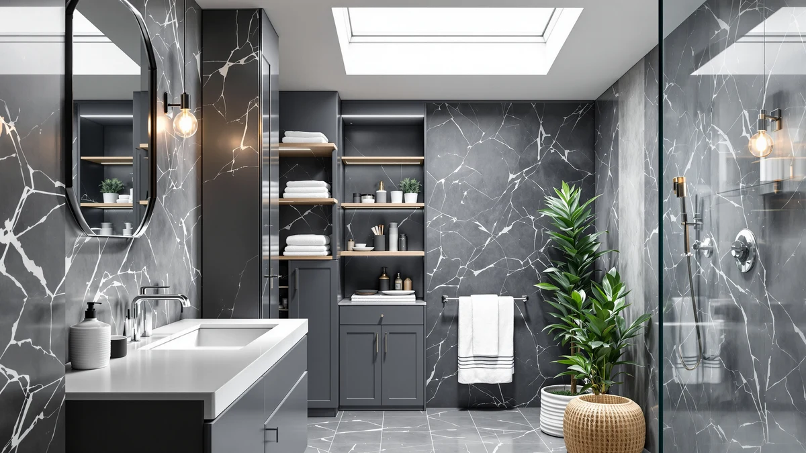

The Best Bathroom Organizers For small bathrooms (2026)
Prices and picks verified as of September 2026. Independent, reader-supported reviews.


Quick Answer
The best bathroom organizers for small bathrooms use vertical wall space, cabinet doors, and narrow gaps instead of open floor area. Our top pick, the GFWARE Bathroom Organizers and Storage set, balances price and capacity better than the rest of the field.
Our pick: GFWARE Bathroom Organizers and Storage, $19.99 Check Price on Amazon
Bottom line: our top pick is the GFWARE Bathroom Organizers and Storage - Detachable 7 Slots at $17.99. The best budget option is the Vecallo Hair Tool Organizer - Black Steel Wall Mounted Hair at $17.99.
Things to Know Before You Buy
- Mounting method matters more than overall size once you're organizing a small bathroom, since floor cabinets and wall-mounted racks compete for different kinds of space.
- Metal frames hold up better than all-plastic organizers in a humid bathroom, so look for a rustproof or coated finish before buying.
- Vertical storage, like over-toilet racks or door-mounted hooks, often frees up more usable room than a floor cabinet, but a cabinet does offer closed, hidden storage a rack cannot.
- Adhesive-mount organizers work well for renters who cannot drill, but the stated weight limit matters more than how large the piece looks.
- Multi-piece sets are best used together to fill different gaps in a small bathroom rather than replaced with one oversized cabinet.
The best bathroom organizers for small bathrooms turn awkward, often-wasted space into usable storage without shrinking your walking room. Think of the inside of a cabinet door, the wall beside a mirror, or the sliver of floor next to the toilet. A bathroom that measures 5 by 8 feet or smaller cannot absorb a bulky dresser-style cabinet the way a primary bathroom can, so the storage has to work around fixtures instead of competing with them.
After comparing pricing, materials, and stated dimensions across dozens of small-bathroom storage products, the GFWARE Bathroom Organizers and Storage set is our pick for most people at $19.99. It uses a metal-and-wood frame sized for a small footprint, and it sits in the same 4-out-of-5 review average as the rest of this list while costing less than nearly every other option here.
Beyond the top pick, this guide covers six other organizers built for tight bathrooms: a dedicated hair-tool caddy from Vecallo, a pack of rustproof adhesive hooks from Zeawec for renters who cannot drill into tile, a stackable bin system for an existing closet, and two floor cabinets plus a slim rolling cart for bathrooms that need more capacity than open shelving allows. Every listing below includes the price, materials, and best-for use case so you can match a pick to your own layout instead of guessing.
Why You Should Trust Us
Ilane Tall covers home organization and bathroom storage for Best Bathroom Storage. Instead of buying and living with every organizer we cover, our team researches published specs, verified pricing, and owner reviews for each product, then compares them directly against one another. When we say the best bathroom organizers for small bathrooms need a specific mounting style or material, that comes from spec sheets and owner feedback, not a guess.
How We Picked
We started by pulling every bathroom organizer in our database tagged for small-bathroom use, then narrowed the list to products under about $150 that solve a specific storage problem: countertop clutter, hair tools, over-toilet space, or closet organization. We excluded anything without a clearly listed material, and we cross-checked pricing so every product here reflects a current, verified offer. We also read through owner reviews for recurring complaints about wobble, sagging, or adhesive giving out, since that pattern matters more in a small bathroom where an organizer sits within arm's reach every day.
How We Compared
We compared these organizers on price per unit of storage, the material used (metal, wood, or a mix), the mounting method, and how each one's stated dimensions would fit a small bathroom's footprint. Where a rating was available, we treated it as one data point rather than the deciding factor, since a 4-out-of-5 average can hide inconsistent quality control across a large batch. For anything sold as a multi-piece set, like the 8-pack hooks or the 5-pack stackable bins, we checked whether the per-unit price beat buying a single larger organizer with similar total capacity.
Our Picks

GFWARE Bathroom Organizers and Storage
What we like
- Metal-and-wood build holds up better than all-plastic organizers in a humid bathroom
- Large-format design consolidates several items instead of stacking multiple small bins
- Priced well under $20, cheaper than most single-purpose cabinets on this list
Flaws but not dealbreakers
- The metal-and-wood combination can show scratches faster than an all-metal finish
- Its large footprint may not suit the smallest half-bathrooms without a dedicated corner
| Material | Metal / wood |
| Size | Large |
The GFWARE Bathroom Organizers and Storage set earns the top spot because it does not force a choice between price and capacity. At $19.99, it costs less than most single-purpose bathroom cabinets on this list, yet its large-format design leaves room for the everyday items that tend to pile up on a small bathroom counter: toiletries, towels, and cleaning supplies. The metal-and-wood frame is a meaningful upgrade over the all-plastic organizers that warp or discolor after a year of shower steam, and it sits in the same 4-out-of-5 review range as the rest of the field.
Because it is one large unit rather than several small pieces, setup is simpler than assembling a stackable system, and there is only one footprint to plan around instead of several. That is also its main limitation: if a bathroom is tight enough that even one large organizer competes with the door swing or the sink cabinet, a wall-mounted or adhesive option like the Zeawec hooks below will fit better. For most small bathrooms, though, the GFWARE set is the organizer to buy first, then add smaller, targeted pieces around it only if more room is still needed.

Vecallo Hair Tool Organizer -
What we like
- Designed specifically for hair tools, so cords and heat-styling tools get a dedicated spot instead of a drawer
- Metal-and-wood construction matches the durability of our top pick at a slightly lower price
- Frees up counter space a general-purpose organizer would not address
Flaws but not dealbreakers
- A narrower use case than an all-purpose organizer, since it is not built to hold towels or general toiletries
- No listed dimensions on the product page, so measure your counter or wall space before buying
| Material | Metal / wood |
| Size | — |
The Vecallo Hair Tool Organizer solves a specific complaint that shows up often in a small bathroom: hair dryers, straighteners, and curling irons do not fit neatly into a general organizer, and their cords tangle with everything else on the counter. At $17.99, it costs slightly less than our top pick while targeting that one problem directly. The metal-and-wood build matches the GFWARE set's durability, an upgrade over the flimsy wire caddies that bend under the weight of a full-size dryer.
Because it is built around hair tools specifically, the Vecallo works best paired with a broader organizer rather than replacing one. Amazon does not list exact dimensions for this listing, so measure the available wall or counter space before ordering, particularly if the bathroom counter is already crowded. Owners in the 4-out-of-5 review average consistently mention that it keeps styling tools upright and off the counter, which is the specific job it is meant to do.

Zeawec 8 Pack Adhesive Rustproof
What we like
- Adhesive mounting avoids drilling, a requirement in most rental leases
- Rustproof coating suits a shower or high-humidity wall better than uncoated metal
- Eight-piece pack spreads storage across the whole bathroom instead of one crowded spot
Flaws but not dealbreakers
- Adhesive-mounted hardware depends on the wall surface and its weight limit, and it will not hold as much as a screwed-in cabinet
- Eight separate pieces take longer to plan and install than a single organizer
| Material | Metal / wood |
| Size | — |
The Zeawec 8 Pack Adhesive Rustproof set targets a problem the other organizers on this list do not solve: renters who are not allowed to drill into tile or drywall. At $16.99 for eight pieces, it works out to roughly $2 per hook or holder, cheaper than buying a single equivalent cabinet, and the rustproof coating is built for a wall that gets steamed daily. Adhesive mounts do come with a tradeoff: they rely on a clean, dry wall surface and hold less weight than a screwed-in bracket.
Spread across a small bathroom, eight adhesive points let storage go exactly where it is needed: one hook by the shower for a loofah, another by the sink for a toothbrush cup, instead of committing counter or floor space to one large piece. That flexibility is why it earns an Also Great spot rather than the top pick. It solves the no-drill constraint well, but it will not replace a cabinet or organizer for bulkier items like towels or supplies.

SNSLXH 5 Pack Stackable Closet
What we like
- Stackable design lets you add or remove bins as storage needs change, unlike a fixed cabinet
- At $59.99 for five pieces, it costs less than half of the ChooChoo or GRUSIGN standalone cabinets on this list
- Works inside an existing closet or under-sink cabinet instead of requiring new floor space
Flaws but not dealbreakers
- Five stackable bins cost more upfront than a single organizer like the GFWARE set, even though the per-bin price is lower
- Needs an existing cabinet or closet shelf to stack inside, so it does not add storage on its own
| Material | Metal / wood |
| Size | 5 Pack |
The SNSLXH 5 Pack Stackable Closet set is the budget route for anyone who already has a bathroom closet or under-sink cabinet but no way to organize what is inside it. At $59.99 for five stackable pieces, it costs less than half of either full-size cabinet on this list, the ChooChoo at $139.99 or the GRUSIGN at $71.99, while still adding real, modular capacity. The stackable format means buying exactly the amount of storage needed now and adding more later, instead of committing to one fixed cabinet size.
Because the bins stack rather than stand alone, this set works best paired with existing shelving. If a small bathroom does not have a closet or cabinet to stack them in, a standalone piece like the GFWARE organizer or one of the floor cabinets below will serve better. For anyone who already has the shelf space but not the organization, this is the more affordable route to real storage capacity than buying a new cabinet outright.

ChooChoo Bathroom Floor Cabinet Modern
What we like
- 43.31-inch height puts most of its storage above floor level, suited to a narrow wall gap
- Closed cabinet doors hide clutter completely, unlike open shelving or wire racks
- Metal-and-wood build matches the durability of the other picks on this list
Flaws but not dealbreakers
- At $139.99, it is the most expensive organizer on this list by a wide margin
- A 25.59-inch width still needs a dedicated floor footprint, which the tightest bathrooms may not have
| Material | Metal / wood |
| Size | 14.17"D x 25.59"W x 43.31"H |
The ChooChoo Bathroom Floor Cabinet Modern is the pick for a small bathroom with one narrow strip of open wall rather than counter or closet space to work with. At 14.17 inches deep, 25.59 inches wide, and 43.31 inches tall, it is built to stand in a gap most cabinets would not fit, while still offering enclosed, floor-to-mid-height storage. Closed doors are the main advantage over the open organizers elsewhere on this list, since everything inside stays out of sight, which matters in a small bathroom where clutter is more visible.
That capacity comes at a real cost. At $139.99, it is the most expensive pick here by a wide margin, roughly seven times the price of the GFWARE set. It earns an Also Great spot rather than the top pick because most small bathrooms do not have the floor space to spare for a standalone cabinet this size, even a narrow one. For a bathroom with that gap of wall to fill and a preference for enclosed storage over open shelving, though, this is the option built for it.

GRUSIGN Bathroom Cabinet Modern Bathroom
What we like
- Three separate drawers keep smaller items sorted instead of piled together behind one door
- Priced at $71.99, roughly half the cost of the ChooChoo cabinet while still offering closed storage
- The drawer-and-door combination suits mixed storage needs, from folded towels to loose toiletries
Flaws but not dealbreakers
- Three drawers plus a door add more moving parts than a simple shelf or open organizer, which means more that can eventually wear out
- Still requires a dedicated floor footprint, so it suits a bathroom with some spare space rather than the tightest layouts
| Material | Metal / wood |
| Size | Three Drawers&One Door |
The GRUSIGN Bathroom Cabinet Modern Bathroom splits the difference between a fully closed cabinet and open shelving with three drawers and one door. At $71.99, it costs roughly half of the ChooChoo cabinet above while still giving separated storage. That drawer configuration is the main reason to choose it over a single-compartment cabinet: smaller items like cotton swabs or medication stay sorted in their own drawer instead of getting buried behind a door with everything else.
Like the other floor-standing cabinet on this list, the GRUSIGN needs a dedicated footprint, so it fits a small bathroom with some spare floor space rather than the tightest half-baths. It earns an Also Great rating because the drawer-plus-door layout is more versatile than a single-compartment cabinet at a similar price, but it is still a larger commitment than the wall-mounted or adhesive options elsewhere on this list. For a bathroom with the floor space and a specific need for drawers, this is the pick.

SPACELEAD Slim Storage Cart 4
What we like
- 4.9-inch depth fits gaps no other organizer on this list can, including beside a toilet or vanity
- At $19.98, it is priced about the same as our top pick despite solving a much narrower storage problem
- The cart format rolls for easy access, unlike a fixed shelf or mounted organizer
Flaws but not dealbreakers
- The 15.3-inch width and narrow depth limit how much it can hold compared to a full cabinet
- Best suited to a specific gap rather than general-purpose bathroom storage
| Material | Metal / wood |
| Size | 15.3X4.9X38.7 inches |
The SPACELEAD Slim Storage Cart 4 is built for one specific situation: the narrow, awkward gap beside a toilet or between a vanity and the wall that most organizers are too wide to use. At 15.3 inches wide, 4.9 inches deep, and 38.7 inches tall, it fits spaces where even our top pick would not. At $19.98, it costs about the same as the GFWARE organizer despite addressing a much narrower problem, which makes it an easy add-on rather than a replacement for broader storage.
Because of its slim profile, the SPACELEAD cart holds less overall volume than a wider organizer or cabinet, so it works best as a supplement to one of the larger picks on this list rather than the only storage in a small bathroom. For a bathroom with that specific dead space next to the toilet, though, this is the pick built to use it instead of leaving it empty.
Quick Comparison
The table below lines up all seven picks so you can compare the best bathroom organizers for small bathrooms by price, material, and best use case at a glance.
| Product | Material | Price | Rating | Best for | Get it |
|---|---|---|---|---|---|
| GFWARE Bathroom Organizers and Storage | Metal / wood | $19.99 | 4 | All-purpose small bathroom storage | View on Amazon → |
| Vecallo Hair Tool Organizer - | Metal / wood | $17.99 | 4 | Hair tool storage | View on Amazon → |
| Zeawec 8 Pack Adhesive Rustproof | Metal / wood | $16.99 | 4 | Renters, no-drill mounting | View on Amazon → |
| SNSLXH 5 Pack Stackable Closet | Metal / wood | $59.99 | 4 | Budget-friendly modular storage | View on Amazon → |
| ChooChoo Bathroom Floor Cabinet Modern | Metal / wood | $139.99 | 4 | Narrow floor space, enclosed storage | View on Amazon → |
| GRUSIGN Bathroom Cabinet Modern Bathroom | Metal / wood | $71.99 | 4 | Drawer-and-door mixed storage | View on Amazon → |
| SPACELEAD Slim Storage Cart 4 | Metal / wood | $19.98 | 4 | Narrow gaps beside toilet or vanity | View on Amazon → |
What is the best bathroom organizer for a small bathroom?
For most small bathrooms, the GFWARE Bathroom Organizers and Storage set is the best overall pick at $19.99, since its metal-and-wood build and large-format design consolidate several storage needs into one purchase.
How do I organize a small bathroom without drilling holes?
Adhesive-mount organizers like the Zeawec 8 Pack are built for this.
The Competition
We looked at more organizers than the seven above while researching this guide. Several door-mounted wire racks were excluded because they concentrate all their weight on the door hinge, and reviewers frequently reported hinges sagging within a year of daily use, a durability problem in a small bathroom where the same door opens dozens of times a day. We also passed on a handful of plastic-only organizers priced close to our top pick, since the metal-and-wood builds above held up better in owner reviews for the same money. A few over-the-sink shelf units looked promising on paper but list dimensions too wide for a genuinely small bathroom's sink, so they would crowd the faucet rather than save space.
None of these categories are automatically bad, but for a small bathroom specifically, the picks above solve the space problem more directly. Across all of it, the GFWARE set remains the best bathroom organizers for small bathrooms pick for most people, with the alternatives above covering the specific gaps it cannot.
Frequently Asked Questions
What is the best bathroom organizer for a small bathroom?
For most small bathrooms, the GFWARE Bathroom Organizers and Storage set is the best overall pick at $19.99, since its metal-and-wood build and large-format design consolidate several storage needs into one purchase. If you need something narrower, the SPACELEAD Slim Storage Cart fits gaps beside a toilet or vanity that a standard organizer cannot.
How do I organize a small bathroom without drilling holes?
Adhesive-mount organizers like the Zeawec 8 Pack are built for this. They rely on adhesive backing instead of screws, which works for rental bathrooms where drilling into tile is not allowed. Check the stated weight limit per hook before loading it up, since adhesive mounts hold less than a screwed-in bracket.
Should I choose a cabinet or an open organizer for a small bathroom?
It depends on whether you have floor space to spare. A closed cabinet like the ChooChoo or GRUSIGN hides clutter completely but needs a dedicated footprint, which the smallest bathrooms may not have. An open or wall-mounted organizer, like the GFWARE set or the Zeawec hooks, uses less floor space but leaves items visible. If every square foot of floor matters, lean toward wall-mounted or adhesive options first.